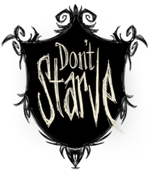

")
Promotional image for Don't Starve featuring Wilson
")
Another promo image featuring different monsters
{kind=link}
")
A very early alpha version of the game
| Don't Starve | |
|  |
|
| Developer | Klei Entertainment |
| Platform | Windows, Mac OS X, Linux, PS4 |
| Release Date | April 23rd, 2013 |
| Genre | Action-adventure, survival horror, sandbox, roguelike |
| Modes | Single-player Multi-player[1] Sandbox Adventure |
| Distribution | Download Only |
Don't Starve is a Roguelike dark fantasy survival game created by Klei Entertainment in April, 2013. It is currently available for Windows, Mac OS X, and Linux through Steam, Google Chrome, or stand-alone application. Don't Starve is also available on PlayStation 4.[2]
Don't Starve challenges the player to survive in a wilderness environment for as long as possible. In Survival Mode (Sandbox), the only way the game ends is with the player's death or by restarting the game in a new random world through the use of the Wooden Thing. When the player dies they are awarded Experience for the number of days they survived. Each death provides experience which is added to a cumulative total and used to unlock additional playable characters. Although death is permanent and the player's world will be lost when the game ends, various methods of resurrection can be found to stave-off the inevitable.
The canon game plot centers around Wilson, a gentleman scientist tricked by the mysterious Maxwell into building a machine which transports him to a strange world filled with monsters and other challenges.[3] The player must help Wilson navigate the various worlds of Adventure Mode, which offer more difficulty as the game progresses. Wilson will begin to understand why Maxwell brought him into this world and the terrible secret of his power. Along the way the player will find and extra character who can only be unlocked during Adventure Mode, and eventually confront Maxwell himself.
The game's developer, Klei Entertainment, has committed to a series of game updates for at least 6 months after the games initial release. A large portion of these updates have focused on adding a new environment (Caves) to the game, along with other new content and bug fixes. Klei has stated that additional updates will include deeper underground areas including Lava Caves and Ruins.[4]
Don't Starve has received moderately positive reviews from critics. GameRankings has given it a combined score of 78.69%, while Metacritic gives it 79/100. Armchair Empire rated the game 8.5/10 saying, "Players looking for a game that will consume them for the next while should consider Don't Starve. The whole process of gathering supplies, and making a go of surviving in the wild while fending off starvation, madness, and predators is quite entertaining."[5] Hardcore Gamer Magazine however was more negative, giving the game only a 2.5/5 rating and saying, "Unless there’s a major update in the near future, you’d be better off waiting until it inevitably becomes part of an indie bundle so that you can briefly jump in and enjoy its first few hours. Until then, your money and time should be spent elsewhere."[6]
Don't Starve was a finalist for the grand prize and "Excellence in Design" subcategory at the 2014 Independent Games Festival awards ceremony; it also received honorable mentions for "Excellence in Visual Art" and "Excellence in Audio." [7]